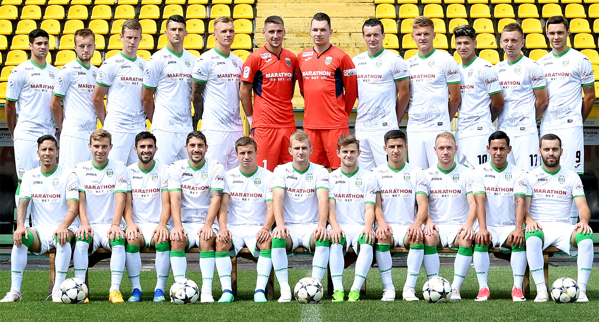

History
Офіційна дата створення команди «Карпати» – 18 січня 1963 року. У 1962 році львівська команда «Сільмаш», вигравши чемпіонат і Кубок Львівської області, здобула право грати у класі «Б». Проте у 1963 р. Федерація футболу СРСР провела чергову реорганізацію радянського футболу – створено другу групу класу «А» (перехідну лігу між класом «Б» і класом «А»), де було передбачено місце для команди зі Львова. До того в місті була лише армійська команда СКА Львів, тож керівництво міста вирішило створити новий, цивільний,профспілковий колектив. У середині 60-х львів'яни закінчували чемпіонати у другій групі класу «Б» переважно у першій десятці – для вищих досягнень бракувало стабільності виступів. Серед гравців виділялись захисник Володимир Валіонта, півзахисник Ігор Кульчицький, нападники Анатолій Крощенко і Валентин Гусєв. В 1965 році колектив був за крок від пониження у класі через недолугий регламент чемпіонатів СРСР. Посівши пристойне, 9-те місце серед 32 клубів, «Карпати» мали по завершенні першості у перехідних іграх боротися із переможцем української зони класу «Б» – СКА (Львів), а згідно з регламентом міг залишитися лише один представник від міста. СКА (Львів) – тогорічний переможець української зони класу «Б» і чвертьфіналіст Кубка СРСР, клуб досвідченіший та старший, переміг 2:0 і 3:0. Але керівництво радянського футболу в останній момент вкотре змінило структуру першостей СРСР і до другої групи класу «А» потрапили обидві команди. Після закінчення сезону 1965 і перехідних ігор «Карпати» покинуло кілька досвідчених гравців, на місце яких важко було знайти гідних замінників. У чемпіонаті 1966 р. відбулося значне оновлення складу, дебютувало багато молодих футболістів, які згодом прославляться на всесоюзній арені перемогою у Кубку СРСР 1969 та виходом до вищої ліги. Це, зокрема, Ростислав Поточняк і Володимир Данилюк. Юні гравці були недосвідченими – зміна поколінь негативно позначилась на результатах – у 1966 та 1967 роках «зелено-білі» фінішували, відповідно, на 14 і 7 позиції.
Last Win
Спаринг «Лехія» – «Карпати» – 0:1